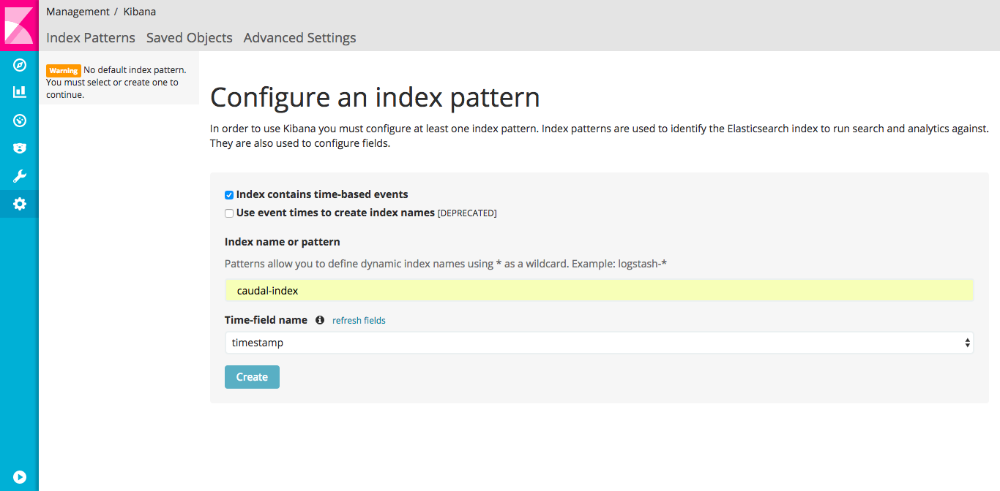
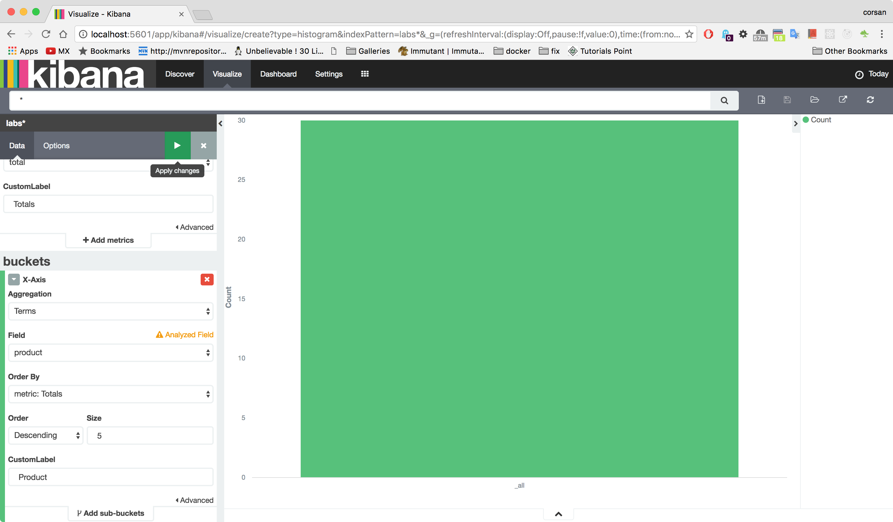
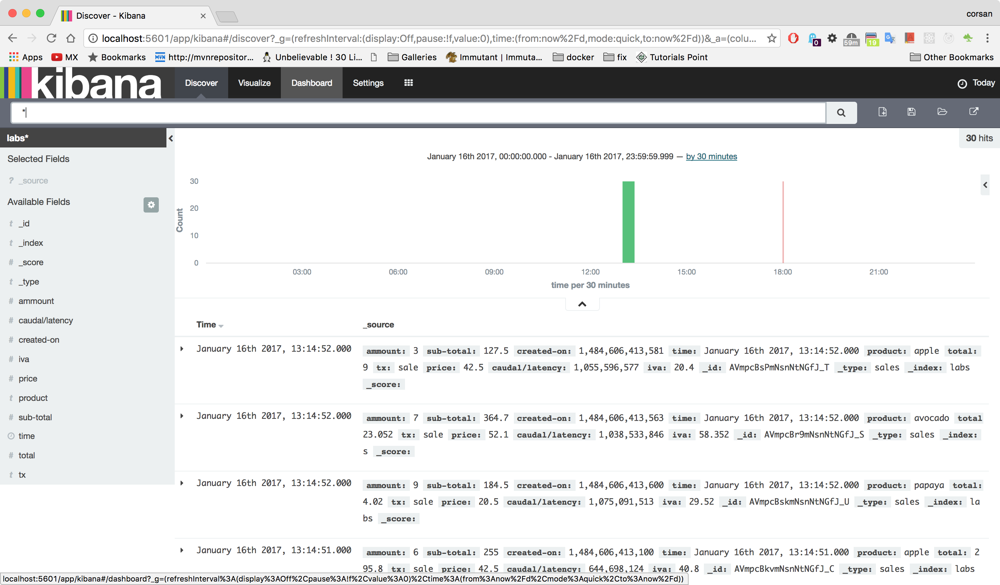
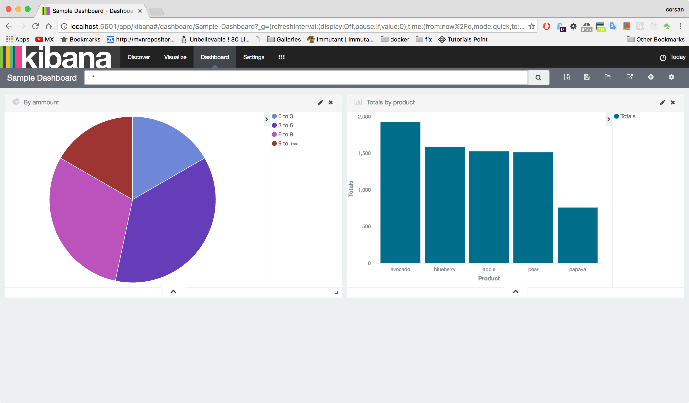

A lab exercises intended to show how to integrate Caudal with Elasticsearch database and another Caudal nodes
Requirements
- Have successfully completed Lab 4: Correlation Streamers
Setting up an event enricher streamer
- Change current directory to the caudal-labs project
$ cd caudal-labs/ |
- Edit config/caudal-config.clj file to configure a dafault streamer that transform incomming messages and send them to the Elasticsearch database.
(ns caudal-labs)
(require '[mx.interware.caudal.io.elastic :as elastic])
(require '[mx.interware.caudal.streams.common :refer :all])
(require '[mx.interware.caudal.streams.stateful :refer :all])
(require '[mx.interware.caudal.streams.stateless :refer :all])
(defn calculate-iva [event]
(let [price (:price event)
ammount (:ammount event)
sub-total (* ammount price)
iva (* 0.16 sub-total)
total (+ sub-total iva)]
(assoc event :sub-total sub-total :iva iva :total total)))
(defsink streamer-1 10000
(smap [calculate-iva]
(printe ["Transformed event : "])
(elastic/elastic-store! ["http://localhost:9200/" "labs" "sales"])))
(deflistener tcp-listener [{:type 'mx.interware.caudal.io.tcp-server
:parameters {:port 9900
:idle-period 60}}])
(wire [tcp-listener] [streamer-1])
Starting Elasticsearch
- Open a new terminal an change current directory to the one containing elasticsearch installation.
$ cd /opt/elasticsearch-2.4.0 |
- Start Elasticsearch database
$ bin/elasticsearch |
- Clean Elasticsearch labs index
$ curl -XDELETE 'http://localhost:9200/labs*/' |
Feeding event streamer
- Restart Caudal for applying changes in configuration.
$ ./bin/start-caudal.sh -c ./config/caudal-config.clj |
Open another terminal and send through the tcp channel the events shown below.
$ telnet localhost 9900
Trying ::1...
Connected to localhost.
Escape character is '^]'.
{:tx "sale", :product "pear", :price 37.3, :time #inst"2017-01-16T19:14:50.522-00:00", :ammount 1}
{:tx "sale", :product "pear", :price 37.3, :time #inst"2017-01-16T19:14:50.596-00:00", :ammount 2}
{:tx "sale", :product "papaya", :price 20.5, :time #inst"2017-01-16T19:14:50.622-00:00", :ammount 4}
{:tx "sale", :product "mango", :price 23.0, :time #inst"2017-01-16T19:14:50.659-00:00", :ammount 5}
{:tx "sale", :product "avocado", :price 52.1, :time #inst"2017-01-16T19:14:50.739-00:00", :ammount 2}
{:tx "sale", :product "pear", :price 37.3, :time #inst"2017-01-16T19:14:50.824-00:00", :ammount 7}
{:tx "sale", :product "avocado", :price 52.1, :time #inst"2017-01-16T19:14:50.864-00:00", :ammount 4}
{:tx "sale", :product "apple", :price 42.5, :time #inst"2017-01-16T19:14:50.901-00:00", :ammount 4}
{:tx "sale", :product "apple", :price 42.5, :time #inst"2017-01-16T19:14:50.935-00:00", :ammount 9}
{:tx "sale", :product "blueberry", :price 65.2, :time #inst"2017-01-16T19:14:51.030-00:00", :ammount 1}
{:tx "sale", :product "papaya", :price 20.5, :time #inst"2017-01-16T19:14:51.074-00:00", :ammount 2}
{:tx "sale", :product "apple", :price 42.5, :time #inst"2017-01-16T19:14:51.148-00:00", :ammount 6}
{:tx "sale", :product "pear", :price 37.3, :time #inst"2017-01-16T19:14:51.245-00:00", :ammount 5}
{:tx "sale", :product "apple", :price 42.5, :time #inst"2017-01-16T19:14:51.341-00:00", :ammount 5}
{:tx "sale", :product "blueberry", :price 65.2, :time #inst"2017-01-16T19:14:51.399-00:00", :ammount 9}
{:tx "sale", :product "avocado", :price 52.1, :time #inst"2017-01-16T19:14:51.456-00:00", :ammount 10}
{:tx "sale", :product "papaya", :price 20.5, :time #inst"2017-01-16T19:14:51.491-00:00", :ammount 4}
{:tx "sale", :product "avocado", :price 52.1, :time #inst"2017-01-16T19:14:51.583-00:00", :ammount 9}
{:tx "sale", :product "blueberry", :price 65.2, :time #inst"2017-01-16T19:14:51.665-00:00", :ammount 8}
{:tx "sale", :product "apple", :price 42.5, :time #inst"2017-01-16T19:14:51.676-00:00", :ammount 4}
{:tx "sale", :product "papaya", :price 20.5, :time #inst"2017-01-16T19:14:51.699-00:00", :ammount 7}
{:tx "sale", :product "pear", :price 37.3, :time #inst"2017-01-16T19:14:51.799-00:00", :ammount 6}
{:tx "sale", :product "pear", :price 37.3, :time #inst"2017-01-16T19:14:51.805-00:00", :ammount 7}
{:tx "sale", :product "blueberry", :price 65.2, :time #inst"2017-01-16T19:14:51.832-00:00", :ammount 3}
{:tx "sale", :product "papaya", :price 20.5, :time #inst"2017-01-16T19:14:51.934-00:00", :ammount 6}
{:tx "sale", :product "pear", :price 37.3, :time #inst"2017-01-16T19:14:51.983-00:00", :ammount 7}
{:tx "sale", :product "mango", :price 23.0, :time #inst"2017-01-16T19:14:51.995-00:00", :ammount 3}
{:tx "sale", :product "avocado", :price 52.1, :time #inst"2017-01-16T19:14:52.095-00:00", :ammount 7}
{:tx "sale", :product "apple", :price 42.5, :time #inst"2017-01-16T19:14:52.186-00:00", :ammount 3}
{:tx "sale", :product "papaya", :price 20.5, :time #inst"2017-01-16T19:14:52.229-00:00", :ammount 9}
...Verify the generated log for the received events
...
17:25:34.674 [NioProcessor-2] INFO o.a.m.filter.logging.LoggingFilter - RECEIVED: HeapBuffer[pos=0 lim=1016 cap=4096: 7B 3A 74 78 20 22 73 61 6C 65 22 2C 20 3A 70 72...]
17:25:34.682 [NioProcessor-2] DEBUG o.a.m.f.codec.ProtocolCodecFilter - Processing a MESSAGE_RECEIVED for session 1
17:25:34.690 [NioProcessor-2] INFO o.a.m.filter.logging.LoggingFilter - RECEIVED: HeapBuffer[pos=0 lim=1024 cap=4096: 7B 3A 74 78 20 22 73 61 6C 65 22 2C 20 3A 70 72...]
17:25:34.690 [NioProcessor-2] DEBUG o.a.m.f.codec.ProtocolCodecFilter - Processing a MESSAGE_RECEIVED for session 1
17:25:34.695 [NioProcessor-2] INFO o.a.m.filter.logging.LoggingFilter - RECEIVED: HeapBuffer[pos=0 lim=1016 cap=2048: 7B 3A 74 78 20 22 73 61 6C 65 22 2C 20 3A 70 72...]
17:25:34.695 [NioProcessor-2] DEBUG o.a.m.f.codec.ProtocolCodecFilter - Processing a MESSAGE_RECEIVED for session 1
Transformed event : {:tx "sale", :product "pear", :price 37.3, :time #inst "2017-01-16T19:14:50.522-00:00", :ammount 1, :caudal/latency 610069, :sub-total 37.3, :iva 5.968, :total 43.268}
17:25:34.699 [clojure-agent-send-pool-1] DEBUG mx.interware.caudal.io.elastic - Storing event(s) into ELS : {:tx "sale", :product "pear", :price 37.3, :time #inst "2017-01-16T19:14:50.522-00:00", :ammount 1, :caudal/latency 610069, :sub-total 37.3, :iva 5.968, :total 43.268}
Transformed event : {:tx "sale", :product "pear", :price 37.3, :time #inst "2017-01-16T19:14:50.596-00:00", :ammount 2, :caudal/latency 628490789, :sub-total 74.6, :iva 11.936, :total 86.536}
17:25:35.315 [clojure-agent-send-pool-2] DEBUG mx.interware.caudal.io.elastic - Storing event(s) into ELS : {:tx "sale", :product "pear", :price 37.3, :time #inst "2017-01-16T19:14:50.596-00:00", :ammount 2, :caudal/latency 628490789, :sub-total 74.6, :iva 11.936, :total 86.536}
Transformed event : {:tx "sale", :product "papaya", :price 20.5, :time #inst "2017-01-16T19:14:50.622-00:00", :ammount 4, :caudal/latency 666548765, :sub-total 82.0, :iva 13.120000000000001, :total 95.12}
...
Transformed event : {:tx "sale", :product "apple", :price 42.5, :time #inst "2017-01-16T19:14:52.186-00:00", :ammount 3, :caudal/latency 1353921330, :sub-total 127.5, :iva 20.400000000000002, :total 147.9}
17:25:36.053 [clojure-agent-send-pool-9] DEBUG mx.interware.caudal.io.elastic - Storing event(s) into ELS : {:tx "sale", :product "apple", :price 42.5, :time #inst "2017-01-16T19:14:52.186-00:00", :ammount 3, :caudal/latency 1353921330, :sub-total 127.5, :iva 20.400000000000002, :total 147.9}
Transformed event : {:tx "sale", :product "papaya", :price 20.5, :time #inst "2017-01-16T19:14:52.229-00:00", :ammount 9, :caudal/latency 1393990461, :sub-total 184.5, :iva 29.52, :total 214.02}
17:25:36.093 [clojure-agent-send-pool-9] DEBUG mx.interware.caudal.io.elastic - Storing event(s) into ELS : {:tx "sale", :product "papaya", :price 20.5, :time #inst "2017-01-16T19:14:52.229-00:00", :ammount 9, :caudal/latency 1393990461, :sub-total 184.5, :iva 29.52, :total 214.02}
...
Verifying database contents
- Open a new terminal and execute the query command shown for checking the events previously processed.
$ curl -XPOST 'localhost:9200/labs*/_search?pretty' -d '{"query": { "match_all": {} }}'
{
"took" : 54,
"timed_out" : false,
"_shards" : {
"total" : 5,
"successful" : 5,
"failed" : 0
},
"hits" : {
"total" : 30,
"max_score" : 1.0,
"hits" : [ {
"_index" : "labs",
"_type" : "sales",
"_id" : "AVnNpiWjzTntsm6U0JOB",
"_score" : 1.0,
"_source" : {
"ammount" : 1,
"sub-total" : 37.3,
"created-on" : 1485213934701,
"time" : "2017-01-16T19:14:50Z",
"product" : "pear",
"total" : 43.268,
"tx" : "sale",
"price" : 37.3,
"caudal/latency" : 610069,
"iva" : 5.968
}
}, {
"_index" : "labs",
"_type" : "sales",
"_id" : "AVnNpib_zTntsm6U0JOD",
"_score" : 1.0,
"_source" : {
"ammount" : 4,
"sub-total" : 82.0,
"created-on" : 1485213935354,
"time" : "2017-01-16T19:14:50Z",
"product" : "papaya",
"total" : 95.12,
"tx" : "sale",
"price" : 20.5,
"caudal/latency" : 666548765,
"iva" : 13.120000000000001
}
},
...
{
"_index" : "labs",
"_type" : "sales",
"_id" : "AVnNpilazTntsm6U0JOZ",
"_score" : 1.0,
"_source" : {
"ammount" : 6,
"sub-total" : 123.0,
"created-on" : 1485213935959,
"time" : "2017-01-16T19:14:51Z",
"product" : "papaya",
"total" : 142.68,
"tx" : "sale",
"price" : 20.5,
"caudal/latency" : 1261751929,
"iva" : 19.68
}
}, {
"_index" : "labs",
"_type" : "sales",
"_id" : "AVnNpibZzTntsm6U0JOC",
"_score" : 1.0,
"_source" : {
"ammount" : 2,
"sub-total" : 74.6,
"created-on" : 1485213935316,
"time" : "2017-01-16T19:14:50Z",
"product" : "pear",
"total" : 86.536,
"tx" : "sale",
"price" : 37.3,
"caudal/latency" : 628490789,
"iva" : 11.936
}
} ]
}
}
Starting Kibana visualizer
- Open a new terminal an change current directory to the one containing kibana installation.
$ cd /opt/kibana-4.6.0 |
- Start Elasticsearch database
$ bin/kibana |
Open url http://localhost:5601 in a browser and click on Settings.
Set the value labs* in the field Index name or pattern and select the value time in Time-field name field.

- Click on button Create.
Creating Pie visualization for event data generated
Verify that visualizations date range is correct.
Click on Visualize option and then in Pie chart.
- Select From new search option.

- Click on Split Slices buckets type.

- Select Range in Aggregation section and ammount in Field. Add the four ranges shown in image below then Apply changes.

- Once you entered ranges, must save the visualization. For that click on Save Visualization, set By ammount value into Title field, then click button Save.

Creating Vertical bar chart visualization for event data generated
- Click on Visualize option and then in Vertical bar chart.

- Select From new search option.

- Expand Y-Axis in metrics section and fill the fields as shown.
- Click X-Axis in buckets section, fill the fields as shown.

- Press the Apply changes button.

- Once you entered ranges, must save the visualization. For that click on Save Visualization, set Totals by product value into Title field, then click button Save.

Creating a dashboard
- Click on Dashboard option.

- Click on + button to add a new dashboard.

- Select visualizations previously created and resize them as shown.

- Click on Save dashboard button.
- Set Sample Dashboard as the name for the one just created.
- Created dashboard should appear as shown below.
